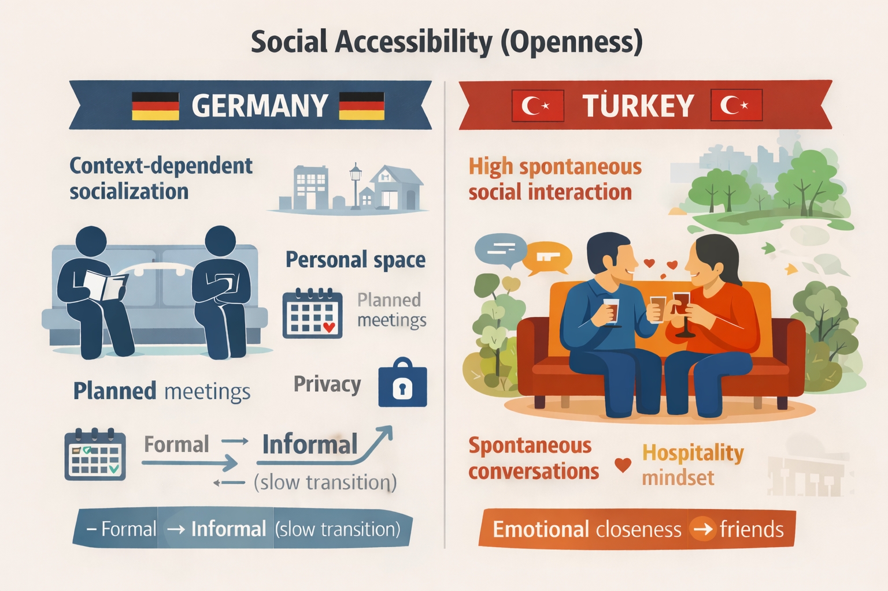

Talking to Strangers
I had just landed and was dragging my suitcase onto the M2 metro line. My mind was busy calculating the route to my hotel, checking stops, ensuring I wasn't being pickpocketed. I was in my "transit bubble."
Then, the bubble popped. A man sitting next to me—mustache, leather jacket, kind eyes—tapped my shoulder. "Tourist?" he asked. I nodded politely, expecting him to sell me something. Instead, he smiled. "Welcome to Istanbul. My name is Mehmet."
In Germany, we have an invisible wall around us in public transport. Breaking it requires a valid reason—a delay, an accident, or a fire. Here, the reason was simply existence. By the time I reached my stop, Mehmet had given me his phone number and made me promise to visit his home for dinner later that week. I took the number out of politeness, never intending to use it. Or so I thought.

🇩🇪 Germany
- Friendship requires time & specific context (clubs, work).
- Privacy in public spaces ("Coconut Culture").
🇹🇷 Turkey
- High spontaneous social interaction.
- Strangers are seen as potential friends ("Peach Culture").